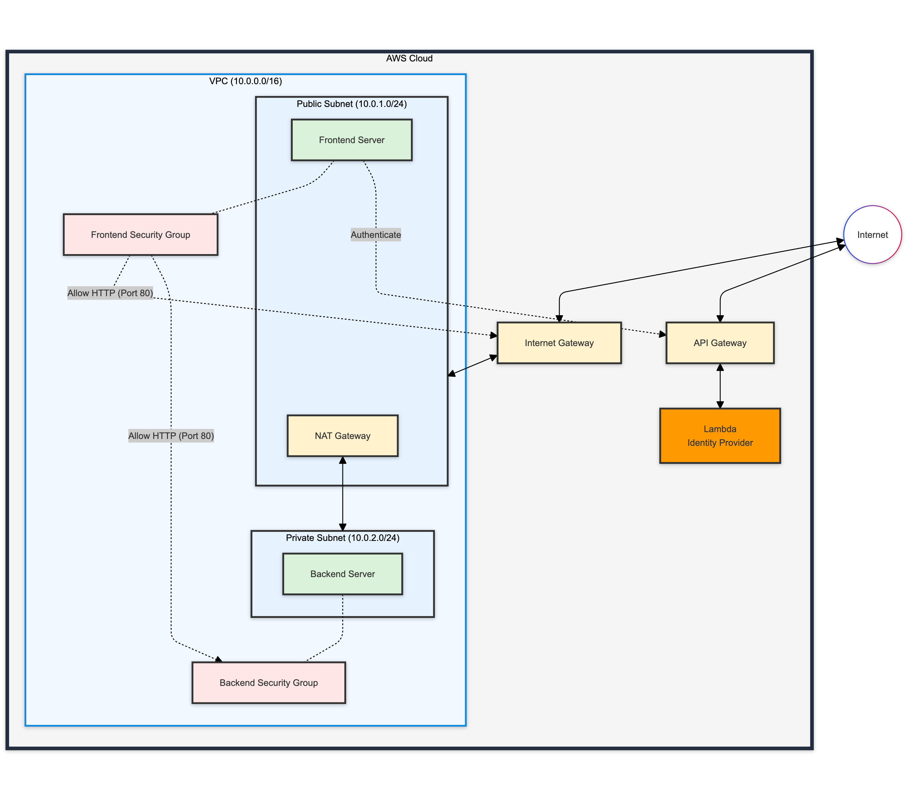

Implementing Basic Zero Trust Network
Zero Trust Architecture Lab 5: Basic Zero Trust Network Implementation
Introduction
Welcome to Lab 5 of our Zero Trust Architecture course! In this lab, you will implement a basic Zero Trust network using AWS services. You'll set up a system that demonstrates core Zero Trust principles, including identity-based access control, least privilege access, and continuous authentication.

Lab Overview
In this lab, you will:
- Set up a simple Identity Provider using AWS Lambda and API Gateway
- Create a VPC with public and private subnets
- Implement network security using Internet Gateway, NAT Gateway, and security groups
- Deploy a backend server with token-based access control
- Deploy a frontend server that authenticates users and mediates access to the backend
Key Components
- Identity Provider: A Lambda function that generates and validates tokens
- VPC: A Virtual Private Cloud with public and private subnets
- Security Groups: FrontendSG and BackendSG to control network access
- Backend Server: An EC2 instance in the private subnet that checks for valid tokens
- Frontend Server: An EC2 instance in the public subnet that authenticates users and requests data from the backend
Lab Steps
- Set up the AWS environment and initialize necessary clients
- Create an Identity Provider using Lambda and API Gateway
- Set up a VPC with public and private subnets
- Configure Internet Gateway, NAT Gateway, and route tables
- Create security groups for frontend and backend servers
- Deploy the backend server in the private subnet
- Deploy the frontend server in the public subnet
- Test the Zero Trust-secured system
Use Cases
Use Case 1: Successful Authentication and Data Access
Scenario: A legitimate user accesses the system with correct credentials.
Steps: 1. Access the frontend server's public IP in a web browser 2. Enter the correct username ("admin") and password ("password123") 3. Observe the generated token and the sensitive data retrieved from the backend
Learning Points: - Token-based authentication in action - Separation of authentication (frontend) and authorization (backend) - Secure communication between frontend and backend servers
Use Case 2: Failed Authentication
Scenario: An attacker attempts to access the system with incorrect credentials.
Steps: 1. Access the frontend server's public IP in a web browser 2. Enter an incorrect username or password 3. Observe the error message and lack of access to sensitive data
Learning Points: - Importance of strong authentication in Zero Trust - How the system denies access without valid credentials
Use Case 3: Token Expiration
Scenario: A user's session expires, requiring re-authentication.
Steps: 1. Authenticate successfully as in Use Case 1 2. Wait for the token to expire (set to 1 hour in this lab) 3. Attempt to access sensitive data again 4. Observe that you're redirected to the login page
Learning Points: - Importance of short-lived tokens in Zero Trust - Continuous authentication principle
Use Case 4: Attempting Direct Backend Access
Scenario: An attacker attempts to bypass the frontend and access the backend directly.
Steps: 1. Attempt to access the backend server's private IP directly 2. Observe that the connection times out
Learning Points: - Importance of network segmentation in Zero Trust - How placing the backend in a private subnet enhances security
Use Case 5: Modifying the Token
Scenario: An attacker obtains a valid token and attempts to modify it.
Steps: 1. Authenticate successfully and copy the generated token 2. Modify part of the token 3. Use developer tools to send a request to the backend with the modified token 4. Observe that the backend rejects the modified token
Learning Points: - Importance of token integrity in Zero Trust - How the backend validates tokens independently
Reflection Questions
- How does this implementation enforce the "never trust, always verify" principle of Zero Trust?
- What are the benefits and potential drawbacks of using short-lived tokens for authentication?
- How does the network architecture (public/private subnets, NAT Gateway) contribute to the Zero Trust model?
- Can you think of ways to further enhance this system's security within the Zero Trust framework?
- How might this basic Zero Trust model need to be adapted for a large-scale, real-world application?
By completing this lab and exploring these use cases, you'll gain hands-on experience with implementing and testing a basic Zero Trust Architecture, setting the foundation for more advanced Zero Trust concepts and implementations.
Identity Provider Setup
This notebook sets up a simple identity provider using AWS Lambda and API Gateway.
# Version 1.2
# Import necessary libraries
import boto3
import json
import time
import random
import string
# Set the AWS region for resource creation (change as needed)
region = 'us-west-2'
# Initialize EC2 client and resource objects for interacting with AWS
lambda_client = boto3.client('lambda', region_name=region)
iam_client = boto3.client('iam', region_name=region)
apigateway_client = boto3.client('apigateway', region_name=region)
print(f"AWS environment initialized in region: {region}")
AWS environment initialized in region: us-west-2
# Function to generate a random string
def generate_random_string(length=10):
return ''.join(random.choices(string.ascii_lowercase + string.digits, k=length))
Step 1: Create IAM Role for Lambda
# Initialize IAM client
iam_client = boto3.client('iam')
# Function to generate a random string
# def generate_random_string(length=10):
# return ''.join(random.choices(string.ascii_lowercase + string.digits, k=length))
print("Creating IAM Role...")
assume_role_policy = {
"Version": "2012-10-17",
"Statement": [{
"Effect": "Allow",
"Principal": {"Service": "lambda.amazonaws.com"},
"Action": "sts:AssumeRole"
}]
}
role_name = f'LabLambdaExecutionRole-{generate_random_string()}'
role_response = iam_client.create_role(
RoleName=role_name,
AssumeRolePolicyDocument=json.dumps(assume_role_policy)
)
iam_client.attach_role_policy(
RoleName=role_name,
PolicyArn='arn:aws:iam::aws:policy/service-role/AWSLambdaBasicExecutionRole'
)
# Wait for role to be created
time.sleep(10)
print(f"IAM Role created: {role_response['Role']['Arn']}")
Creating IAM Role...
IAM Role created: arn:aws:iam::172872575382:role/LabLambdaExecutionRole-na1s9h99rx
Step 2: Create Lambda Function
import boto3
import json
import io
import zipfile
# Initialize Lambda client
lambda_client = boto3.client('lambda')
print("Creating Lambda Function...")
lambda_code = """
const crypto = require('crypto');
const users = {
'admin': 'password123',
'user1': 'password456'
};
const generateToken = (username) => {
const payload = {
username: username,
exp: Math.floor(Date.now() / 1000) + (60 * 60) // 1 hour expiration
};
return Buffer.from(JSON.stringify(payload)).toString('base64');
};
exports.handler = async (event) => {
const { username, password } = JSON.parse(event.body);
if (users[username] && users[username] === password) {
const token = generateToken(username);
return {
statusCode: 200,
body: JSON.stringify({ token: token })
};
} else {
return {
statusCode: 401,
body: JSON.stringify({ message: 'Invalid credentials' })
};
}
};
"""
# Create a ZIP file in memory
zip_output = io.BytesIO()
with zipfile.ZipFile(zip_output, 'w', zipfile.ZIP_DEFLATED) as zip_file:
zip_file.writestr('index.js', lambda_code)
# Seek to the beginning of the BytesIO object
zip_output.seek(0)
lambda_function_name = f'IdentityProviderFunction-{generate_random_string()}'
lambda_response = lambda_client.create_function(
FunctionName=lambda_function_name,
Runtime='nodejs16.x',
Role=role_response['Role']['Arn'],
Handler='index.handler',
Code={'ZipFile': zip_output.read()},
Timeout=30
)
print(f"Lambda Function created: {lambda_response['FunctionArn']}")
Creating Lambda Function...
Lambda Function created: arn:aws:lambda:us-west-2:172872575382:function:IdentityProviderFunction-ztst5lvzjs
Step 3: Create API Gateway
print("Creating API Gateway...")
api_response = apigateway_client.create_rest_api(
name='IdentityProviderApi'
)
resources = apigateway_client.get_resources(restApiId=api_response['id'])
root_id = resources['items'][0]['id']
resource_response = apigateway_client.create_resource(
restApiId=api_response['id'],
parentId=root_id,
pathPart='authenticate'
)
apigateway_client.put_method(
restApiId=api_response['id'],
resourceId=resource_response['id'],
httpMethod='POST',
authorizationType='NONE'
)
apigateway_client.put_integration(
restApiId=api_response['id'],
resourceId=resource_response['id'],
httpMethod='POST',
type='AWS_PROXY',
integrationHttpMethod='POST',
uri=f"arn:aws:apigateway:{lambda_response['FunctionArn'].split(':')[3]}:lambda:path/2015-03-31/functions/{lambda_response['FunctionArn']}/invocations"
)
Creating API Gateway...
{'ResponseMetadata': {'RequestId': 'f1e56980-b892-4f45-9522-9f45e711b0f1',
'HTTPStatusCode': 201,
'HTTPHeaders': {'date': 'Sun, 02 Feb 2025 01:56:02 GMT',
'content-type': 'application/json',
'content-length': '318',
'connection': 'keep-alive',
'x-amzn-requestid': 'f1e56980-b892-4f45-9522-9f45e711b0f1',
'x-amz-apigw-id': 'FVWL9JHwPHcEb6w='},
'RetryAttempts': 0},
'type': 'AWS_PROXY',
'httpMethod': 'POST',
'uri': 'arn:aws:apigateway:us-west-2:lambda:path/2015-03-31/functions/arn:aws:lambda:us-west-2:172872575382:function:IdentityProviderFunction-ztst5lvzjs/invocations',
'passthroughBehavior': 'WHEN_NO_MATCH',
'timeoutInMillis': 29000,
'cacheNamespace': '4c9l54',
'cacheKeyParameters': []}
Step 4: Deploy API
print("Deploying API...")
apigateway_client.create_deployment(
restApiId=api_response['id'],
stageName='prod'
)
Deploying API...
{'ResponseMetadata': {'RequestId': '4099bd41-e716-4899-a91c-056246d5ee20',
'HTTPStatusCode': 201,
'HTTPHeaders': {'date': 'Sun, 02 Feb 2025 01:56:02 GMT',
'content-type': 'application/json',
'content-length': '41',
'connection': 'keep-alive',
'x-amzn-requestid': '4099bd41-e716-4899-a91c-056246d5ee20',
'x-amz-apigw-id': 'FVWL-KaVvHcEbbw='},
'RetryAttempts': 0},
'id': '46lm8x',
'createdDate': datetime.datetime(2025, 2, 2, 1, 56, 2, tzinfo=tzlocal())}
Step 5: Add Lambda Permission
print("Adding Lambda Permission...")
lambda_client.add_permission(
FunctionName=lambda_response['FunctionName'],
StatementId='apigateway-invoke',
Action='lambda:InvokeFunction',
Principal='apigateway.amazonaws.com',
SourceArn=f"arn:aws:execute-api:{lambda_response['FunctionArn'].split(':')[3]}:{lambda_response['FunctionArn'].split(':')[4]}:{api_response['id']}/*/*/authenticate"
)
Adding Lambda Permission...
{'ResponseMetadata': {'RequestId': 'e60ba71f-d694-494e-a78a-dffe41e99559',
'HTTPStatusCode': 201,
'HTTPHeaders': {'date': 'Sun, 02 Feb 2025 01:56:03 GMT',
'content-type': 'application/json',
'content-length': '385',
'connection': 'keep-alive',
'x-amzn-requestid': 'e60ba71f-d694-494e-a78a-dffe41e99559'},
'RetryAttempts': 0},
'Statement': '{"Sid":"apigateway-invoke","Effect":"Allow","Principal":{"Service":"apigateway.amazonaws.com"},"Action":"lambda:InvokeFunction","Resource":"arn:aws:lambda:us-west-2:172872575382:function:IdentityProviderFunction-ztst5lvzjs","Condition":{"ArnLike":{"AWS:SourceArn":"arn:aws:execute-api:us-west-2:172872575382:7btkmuwh54/*/*/authenticate"}}}'}
Initialize Value Store
Initialize long-term storage
class ValueStore:
_instance = None
def __new__(cls):
if cls._instance is None:
cls._instance = super(ValueStore, cls).__new__(cls)
cls._instance.store = {}
return cls._instance
def set(self, key, value):
self.store[key] = value
def get(self, key, default=None):
return self.store.get(key, default)
def print_all(self):
for key, value in self.store.items():
print(f"{key}: {value}")
# Create a global instance
value_store = ValueStore()
# Test the ValueStore
value_store.set('test_key', 'test_value')
print(value_store.get('test_key')) # Should print: test_value
test_value
Output
# Output the API URL
api_url = f"https://{api_response['id']}.execute-api.{lambda_response['FunctionArn'].split(':')[3]}.amazonaws.com/prod/authenticate"
print(f"\nIdentity Provider API URL: {api_url}")
print("\nSetup complete!")
# Store the api_url for later use
idp_url = api_url
value_store.set('idp_url',api_url)
Identity Provider API URL: https://7btkmuwh54.execute-api.us-west-2.amazonaws.com/prod/authenticate
Setup complete!
Base VPC Setup
This notebook sets up a base VPC.
Setup
First, let's set up our AWS environment. Make sure you have configured your AWS CLI with the appropriate credentials.
import boto3
import json
import time
Set the AWS region
Configure the AWS region to create the network and servers
# Set the AWS region for resource creation (change as needed)
region = 'us-west-2'
Initialize AWS clients
Setup the necessary environment variables
# Initialize EC2 client and resource objects for interacting with AWS
ec2_client = boto3.client('ec2', region_name=region)
ec2_resource = boto3.resource('ec2', region_name=region)
secretsmanager = boto3.client('secretsmanager', region_name=region)
iam = boto3.client('iam', region_name=region)
print(f"AWS environment initialized in region: {region}")
AWS environment initialized in region: us-west-2
Step 1: Create a VPC and Subnet
Let's start by creating our Virtual Private Cloud (VPC) and a public subnet.
# Create VPC
vpc_response = ec2_client.create_vpc(CidrBlock='10.0.0.0/16')
vpc_id = vpc_response['Vpc']['VpcId']
ec2_client.create_tags(Resources=[vpc_id], Tags=[{'Key': 'Name', 'Value': 'ZTSecuredVPC'}])
value_store.set('vpc_id', vpc_id)
print(f"VPC created with ID: {vpc_id}")
VPC created with ID: vpc-0728e735804cc4e70
# Get available Availability Zones
available_azs = ec2_client.describe_availability_zones()['AvailabilityZones']
az = available_azs[0]['ZoneName'] # Choose the first available AZ
# Create Public subnet
public_subnet_response = ec2_client.create_subnet(
VpcId=value_store.get('vpc_id'),
CidrBlock='10.0.1.0/24',
AvailabilityZone=az,
TagSpecifications=[
{
'ResourceType': 'subnet',
'Tags': [
{
'Key': 'Name',
'Value': 'PublicSubnet'
}
]
}
]
)
public_subnet_id = public_subnet_response['Subnet']['SubnetId']
print(f"Public subnet created with ID: {public_subnet_id} in Availability Zone: {az}")
# Enable auto-assign public IP for the public subnet
ec2_client.modify_subnet_attribute(
SubnetId=public_subnet_id,
MapPublicIpOnLaunch={'Value': True}
)
print("Auto-assign public IP enabled for the public subnet")
Public subnet created with ID: subnet-0985cd89c6c75a3a8 in Availability Zone: us-west-2a
Auto-assign public IP enabled for the public subnet
# First, let's find the public subnet ID
public_subnets = ec2_client.describe_subnets(
Filters=[
{'Name': 'vpc-id', 'Values': [vpc_id]},
{'Name': 'tag:Name', 'Values': ['PublicSubnet']}
]
)['Subnets']
if not public_subnets:
raise ValueError("No public subnet found. Please ensure you've created a public subnet with the tag 'Name: PublicSubnet'")
public_subnet_id = public_subnets[0]['SubnetId']
public_subnet_az = public_subnets[0]['AvailabilityZone']
print(f"Found public subnet with ID: {public_subnet_id} in Availability Zone: {public_subnet_az}")
# Now create the Private subnet in the same Availability Zone
private_subnet_response = ec2_client.create_subnet(
VpcId=value_store.get('vpc_id'),
CidrBlock='10.0.2.0/24', # Different CIDR block for the private subnet
AvailabilityZone=public_subnet_az,
TagSpecifications=[
{
'ResourceType': 'subnet',
'Tags': [
{
'Key': 'Name',
'Value': 'PrivateSubnet'
}
]
}
]
)
private_subnet_id = private_subnet_response['Subnet']['SubnetId']
print(f"Private subnet created with ID: {private_subnet_id} in the same AZ as the public subnet: {public_subnet_az}")
# Modify the private subnet to disable auto-assign public IP
ec2_client.modify_subnet_attribute(SubnetId=private_subnet_id, MapPublicIpOnLaunch={'Value': False})
print("Auto-assign public IP disabled for the private subnet")
Found public subnet with ID: subnet-0985cd89c6c75a3a8 in Availability Zone: us-west-2a
Private subnet created with ID: subnet-05d90edb0a0491089 in the same AZ as the public subnet: us-west-2a
Auto-assign public IP disabled for the private subnet
Step 2: Set up Internet Gateway
Now, let's create an Internet Gateway.
# Create Internet Gateway
igw_name = "ZTSecuredIGW"
igw_response = ec2_client.create_internet_gateway(
TagSpecifications=[
{
'ResourceType': 'internet-gateway',
'Tags': [
{
'Key': 'Name',
'Value': igw_name
}
]
}
]
)
igw_id = igw_response['InternetGateway']['InternetGatewayId']
ec2_client.attach_internet_gateway(InternetGatewayId=igw_id, VpcId=value_store.get('vpc_id'))
print(f"Internet Gateway '{igw_name}' created and attached with ID: {igw_id}")
Internet Gateway 'ZTSecuredIGW' created and attached with ID: igw-07f367544383df930
Step 3: Set up NAT Gateway
Next, let's create a NAT Gateway (Network Address Translation) to give instances in private subnet access to the Internet.
# Setup NAT Gateway
# Note: This will take a few minutes
def setup_nat_gateway(vpc_id, public_subnet_id, nat_gateway_name="ZTNATGW"):
# Create Elastic IP
eip = ec2_client.allocate_address(Domain='vpc')
# Create NAT Gateway with a name tag
nat_gateway = ec2_client.create_nat_gateway(
SubnetId=public_subnet_id,
AllocationId=eip['AllocationId'],
TagSpecifications=[
{
'ResourceType': 'natgateway',
'Tags': [
{
'Key': 'Name',
'Value': nat_gateway_name
}
]
}
]
)
# Wait for the NAT Gateway to be available
waiter = ec2_client.get_waiter('nat_gateway_available')
waiter.wait(
NatGatewayIds=[nat_gateway['NatGateway']['NatGatewayId']],
WaiterConfig={'Delay': 30, 'MaxAttempts': 10}
)
print(f"NAT Gateway '{nat_gateway_name}' created with ID: {nat_gateway['NatGateway']['NatGatewayId']}")
return nat_gateway['NatGateway']['NatGatewayId']
# Create the NAT Gateway
nat_gateway_id = setup_nat_gateway(value_store.get('vpc_id'), public_subnet_id)
print(f"NAT Gateway setup complete with ID: {nat_gateway_id}")
NAT Gateway 'ZTNATGW' created with ID: nat-0f6054636ced46034
NAT Gateway setup complete with ID: nat-0f6054636ced46034
# Create and configure Public route table
rt_name = "ZTPublicRT"
rt_response = ec2_client.create_route_table(
VpcId=value_store.get('vpc_id'),
TagSpecifications=[
{
'ResourceType': 'route-table',
'Tags': [
{
'Key': 'Name',
'Value': rt_name
}
]
}
]
)
rt_id = rt_response['RouteTable']['RouteTableId']
# Create route to Internet Gateway
ec2_client.create_route(RouteTableId=rt_id, DestinationCidrBlock='0.0.0.0/0', GatewayId=igw_id)
# Associate route table with subnet
ec2_client.associate_route_table(RouteTableId=rt_id, SubnetId=public_subnet_id)
print(f"Route table '{rt_name}' created and configured with ID: {rt_id}")
Route table 'ZTPublicRT' created and configured with ID: rtb-0a513037ab63a2104
# Create and configure Private route table
private_rt_name = "ZTPrivateRT"
private_rt_response = ec2_client.create_route_table(
VpcId=value_store.get('vpc_id'),
TagSpecifications=[
{
'ResourceType': 'route-table',
'Tags': [
{
'Key': 'Name',
'Value': private_rt_name
}
]
}
]
)
private_rt_id = private_rt_response['RouteTable']['RouteTableId']
# Create route to NAT Gateway
ec2_client.create_route(
RouteTableId=private_rt_id,
DestinationCidrBlock='0.0.0.0/0',
NatGatewayId=nat_gateway_id
)
# Associate route table with private subnet
ec2_client.associate_route_table(RouteTableId=private_rt_id, SubnetId=private_subnet_id)
print(f"Private route table '{private_rt_name}' created and configured with ID: {private_rt_id}")
# Optionally, you can describe the route table to verify its configuration
routes = ec2_client.describe_route_tables(RouteTableIds=[private_rt_id])
print(f"Routes in the private route table: {routes['RouteTables'][0]['Routes']}")
Private route table 'ZTPrivateRT' created and configured with ID: rtb-0a0fbbcf41bf03337
Routes in the private route table: [{'DestinationCidrBlock': '10.0.0.0/16', 'GatewayId': 'local', 'Origin': 'CreateRouteTable', 'State': 'active'}, {'DestinationCidrBlock': '0.0.0.0/0', 'NatGatewayId': 'nat-0f6054636ced46034', 'Origin': 'CreateRoute', 'State': 'active'}]
Step 4: Create an Zero Trust Security Groups
Let's create a security group that allows for following: 1. FrontendSG: Allow traffic to port 80 from all locations 2. BackendSG: Allow traffic to port 80 from instance that is assigned FrontendSG
import boto3
ec2_client = boto3.client('ec2')
def create_security_groups(vpc_id):
# FRONTEND SECURITY GROUP
# Create Web Server Security Group
frontend_sg = ec2_client.create_security_group(
GroupName='FrontendSG',
Description='Allow HTTP access to web server',
VpcId=vpc_id
)
frontend_sg_id = frontend_sg['GroupId']
# Add Name tag to Frontend Security Group
ec2_client.create_tags(
Resources=[frontend_sg_id],
Tags=[{'Key': 'Name', 'Value': 'FrontendSG'}]
)
# Add inbound rule to allow HTTP traffic from anywhere
ec2_client.authorize_security_group_ingress(
GroupId=frontend_sg_id,
IpPermissions=[
{'IpProtocol': 'tcp', 'FromPort': 80, 'ToPort': 80, 'IpRanges': [{'CidrIp': '0.0.0.0/0'}]}
]
)
# BACKEND SECURITY GROUP
# Create Backend Server Security Group
backend_sg = ec2_client.create_security_group(
GroupName='BackendSG',
Description='Allow access from web server to backend server',
VpcId=vpc_id
)
backend_sg_id = backend_sg['GroupId']
# Add Name tag to Backend Security Group
ec2_client.create_tags(
Resources=[backend_sg_id],
Tags=[{'Key': 'Name', 'Value': 'BackendSG'}]
)
# Add inbound rule to allow all TCP traffic from the frontend security group
ec2_client.authorize_security_group_ingress(
GroupId=backend_sg_id,
IpPermissions=[
{'IpProtocol': 'tcp', 'FromPort': 0, 'ToPort': 65535, 'UserIdGroupPairs': [{'GroupId': frontend_sg_id}]}
]
)
value_store.set('frontend_sg_id', frontend_sg_id)
value_store.set('backend_sg_id', backend_sg_id)
print(f"Frontend Server Security Group ID: {frontend_sg_id}")
print(f"Backend Server Security Group ID: {backend_sg_id}")
return frontend_sg_id, backend_sg_id
# Usage example
web_sg_id, backend_sg_id = create_security_groups(value_store.get('vpc_id'))
Frontend Server Security Group ID: sg-07c0dafa87d5bedc6
Backend Server Security Group ID: sg-0a1806b633bc068de
Frontend and Backend Servers Setup
This notebook sets up the frontend and backend servers.
Step 1: Deploy Backend Server
Now, let's deploy our backend server with a mock sensitive database.
# Function to fetch the latest Amazon Linux 2 AMI ID with error handling and fallback
def get_latest_amazon_linux_2_ami():
try:
response = ec2_client.describe_images(
Owners=['amazon'],
Filters=[
{'Name': 'name', 'Values': ['amzn2-ami-hvm-*-x86_64-gp2']},
{'Name': 'state', 'Values': ['available']}
]
)
if not response['Images']:
print("No Amazon Linux 2 AMIs found. Falling back to a default AMI ID.")
return 'ami-0caa0a2e2a99b8b82' # This is a fallback AMI ID, replace with a known good one for your region
# Sort the images by creation date
sorted_images = sorted(response['Images'], key=lambda x: x['CreationDate'], reverse=True)
latest_ami_id = sorted_images[0]['ImageId']
print(f"Latest Amazon Linux 2 AMI ID: {latest_ami_id}")
return latest_ami_id
except Exception as e:
print(f"An error occurred while fetching the latest AMI: {str(e)}")
print("Falling back to a default AMI ID.")
return 'ami-0caa0a2e2a99b8b82' # This is a fallback AMI ID, replace with a known good one for your region
# Get the latest Amazon Linux 2 AMI ID
ami_id = get_latest_amazon_linux_2_ami()
print(f"Using AMI ID: {ami_id}")
Latest Amazon Linux 2 AMI ID: ami-0d7d857b0b59e8d60
Using AMI ID: ami-0d7d857b0b59e8d60
# User data script for backend instance setup: installs and configures Apache with PHP
backend_user_data = '''#!/bin/bash
yum update -y
yum install -y httpd php
systemctl start httpd
systemctl enable httpd
cat <<'EOT' > /var/www/html/api.php
<?php
header('Content-Type: application/json');
$headers = getallheaders();
if (!isset($headers['Authorization'])) {
http_response_code(401);
echo json_encode(['error' => 'No token provided']);
exit;
}
$token = $headers['Authorization'];
$payload = json_decode(base64_decode($token), true);
if (!$payload || !isset($payload['exp']) || $payload['exp'] < time()) {
http_response_code(401);
echo json_encode(['error' => 'Invalid or expired token']);
exit;
}
echo json_encode(['sensitive' => 'This is sensitive data from the backend', 'user' => $payload['username']]);
?>
EOT
chown apache:apache /var/www/html/api.php
chmod 644 /var/www/html/api.php
systemctl restart httpd
'''
# Create and launch the backend EC2 instance with specified configuration
# Only assign Private IP
backend_instance = ec2_resource.create_instances(
ImageId=ami_id, # Amazon Linux 2 AMI ID (replace with the latest)
InstanceType='t3.micro',
MaxCount=1,
MinCount=1,
NetworkInterfaces=[{
'SubnetId': private_subnet_id,
'DeviceIndex': 0,
'AssociatePublicIpAddress': False,
'Groups': [value_store.get('backend_sg_id')]
}],
UserData=backend_user_data,
TagSpecifications=[
{
'ResourceType': 'instance',
'Tags': [
{
'Key': 'Name',
'Value': 'BackendServer'
},
]
},
]
)
backend_id = backend_instance[0].id
print(f"Backend server deployed with ID: {backend_id}")
Backend server deployed with ID: i-00228d5cfd5aadb7b
# Wait for the instance to be running to get the IP addresses
backend_instance[0].wait_until_running()
backend_instance[0].reload()
# Get private IP
backend_private_ip = backend_instance[0].private_ip_address
value_store.set('backend_private_ip', backend_private_ip)
print(f"Backend server private IP: {backend_private_ip}")
# Get public IP if it exists
backend_public_ip = backend_instance[0].public_ip_address
if backend_public_ip:
print(f"Backend server public IP: {backend_public_ip}")
else:
print("Backend server does not have a public IP address.")
Backend server private IP: 10.0.2.229
Backend server does not have a public IP address.
Step 2: Deploy Frontend Web Server
Finally, let's deploy our public-facing web server.
idp_url = value_store.get('idp_url')
backend_private_ip = value_store.get('backend_private_ip')
# User data script for frontend instance setup: installs and configures Apache with PHP
# Create a simple login screen that will verify the credentials with Secrets Manager
frontend_user_data = f'''#!/bin/bash
yum update -y
yum install -y httpd php php-curl
systemctl start httpd
systemctl enable httpd
echo "date.timezone = America/New_York" >> /etc/php.ini
cat <<EOT > /var/www/html/index.php
<?php
error_reporting(E_ALL);
ini_set('display_errors', 1);
session_start();
\$identity_provider_url = '{value_store.get('idp_url')}';
\$backend_ip = '{value_store.get('backend_private_ip')}';
\$error_message = '';
if (isset(\$_GET['reset_session'])) {{
session_unset();
session_destroy();
header("Location: index.php");
exit();
}}
if (\$_SERVER['REQUEST_METHOD'] === 'POST') {{
if (isset(\$_POST['username']) && isset(\$_POST['password'])) {{
\$ch = curl_init(\$identity_provider_url);
curl_setopt(\$ch, CURLOPT_RETURNTRANSFER, true);
curl_setopt(\$ch, CURLOPT_POST, true);
curl_setopt(\$ch, CURLOPT_POSTFIELDS, json_encode([
'username' => \$_POST['username'],
'password' => \$_POST['password']
]));
curl_setopt(\$ch, CURLOPT_HTTPHEADER, ['Content-Type: application/json']);
\$response = curl_exec(\$ch);
\$status_code = curl_getinfo(\$ch, CURLINFO_HTTP_CODE);
curl_close(\$ch);
if (\$status_code === 200) {{
\$result = json_decode(\$response, true);
\$_SESSION['token'] = \$result['token'];
}} else {{
\$error_message = 'Invalid username or password. Please try again.';
}}
}}
}}
if (isset(\$_SESSION['token'])) {{
\$backend_url = "http://\$backend_ip/api.php";
\$ch = curl_init(\$backend_url);
curl_setopt(\$ch, CURLOPT_RETURNTRANSFER, true);
curl_setopt(\$ch, CURLOPT_HTTPHEADER, [
"Authorization: " . \$_SESSION['token']
]);
\$response = curl_exec(\$ch);
\$status_code = curl_getinfo(\$ch, CURLINFO_HTTP_CODE);
curl_close(\$ch);
if (\$status_code === 200) {{
\$data = json_decode(\$response, true);
echo "<h1>Welcome to our Secure Web Server!</h1>";
echo "<h2>Your Session Token:</h2>";
echo "<pre>" . \$_SESSION['token'] . "</pre>";
echo "<h2>Data from backend:</h2>";
echo "<pre>" . print_r(\$data, true) . "</pre>";
echo "<p><a href='?reset_session=1'>Reset Session</a></p>";
}} else {{
echo "<h1>Error connecting to backend server</h1>";
echo "<p>Please check the backend server configuration.</p>";
echo "<p><a href='?reset_session=1'>Reset Session</a></p>";
}}
}} else {{
echo "<h1>Please Log In</h1>";
if (\$error_message) {{
echo "<p style='color: red;'>\$error_message</p>";
}}
echo "<form method='post'>";
echo "Username: <input type='text' name='username'><br>";
echo "Password: <input type='password' name='password'><br>";
echo "<input type='submit' value='Log In'>";
echo "</form>";
}}
?>
EOT
chown apache:apache /var/www/html/index.php
chmod 644 /var/www/html/index.php
systemctl restart httpd
'''
# Confirm the input variables
print(value_store.get('idp_url'))
print(value_store.get('backend_private_ip'))
https://7btkmuwh54.execute-api.us-west-2.amazonaws.com/prod/authenticate
10.0.2.229
# Create and launch the frontend EC2 instance with specified configuration
web_instance = ec2_resource.create_instances(
ImageId=ami_id, # Amazon Linux 2 AMI ID (replace with the latest)
InstanceType='t3.micro',
MaxCount=1,
MinCount=1,
NetworkInterfaces=[{
'SubnetId': public_subnet_id,
'DeviceIndex': 0,
'AssociatePublicIpAddress': True,
'Groups': [value_store.get('frontend_sg_id')]
}],
UserData=frontend_user_data,
TagSpecifications=[
{
'ResourceType': 'instance',
'Tags': [
{
'Key': 'Name',
'Value': 'FrontendServer'
},
]
},
],
)
web_id = web_instance[0].id
print(f"Web server deployed with ID: {web_id}")
Web server deployed with ID: i-00ba47e8a5391b8fe
# Wait for the instance to be running to get the IP addresses
web_instance[0].wait_until_running()
web_instance[0].reload()
# Get private IP
web_private_ip = web_instance[0].private_ip_address
print(f"Web server private IP: {web_private_ip}")
# Get public IP
web_public_ip = web_instance[0].public_ip_address
if web_public_ip:
print(f"Frontend Web server public IP: {web_public_ip}")
else:
print("Frontend Web server does not have a public IP address.")
Web server private IP: 10.0.1.71
Frontend Web server public IP: 34.220.206.226
Testing the Zero Trust-Secured System
Now that our system is set up, let's test it by accessing the web server.
# Wait for a bit to ensure the servers are fully initialized
import time
import boto3
def wait_for_ec2_instances(instance_ids, region_name, timeout=300, interval=10):
"""
Waits for the given EC2 instances to pass system and instance status checks within a timeout period.
Args:
instance_ids (list): A list of EC2 instance IDs to check.
region_name (str): The AWS region where the instances are located.
timeout (int): The maximum time to wait (in seconds) before giving up.
interval (int): The time interval (in seconds) between status checks.
Returns:
bool: True if all instances pass system and instance checks within the timeout, False otherwise.
"""
ec2 = boto3.client('ec2', region_name=region_name)
start_time = time.time()
while time.time() - start_time < timeout:
# Check the status of the EC2 instances
response = ec2.describe_instance_status(InstanceIds=instance_ids)
# Get the instance statuses
statuses = {instance['InstanceId']: {
'instance_state': instance['InstanceState']['Name'],
'system_status': instance['SystemStatus']['Status'],
'instance_status': instance['InstanceStatus']['Status']
}
for instance in response['InstanceStatuses']}
# Check if all instances are 'running' and both system and instance checks are 'ok'
all_ready = all(
status['instance_state'] == 'running' and
status['system_status'] == 'ok' and
status['instance_status'] == 'ok'
for status in statuses.values()
)
if all_ready:
print(f"All instances {instance_ids} are fully initialized and passed all checks.")
return True
print(f"Current statuses: {statuses}")
print(f"Waiting for EC2 instances {instance_ids} to pass system and instance checks...")
time.sleep(interval)
print(f"Timeout: EC2 instances {instance_ids} did not fully initialize within {timeout} seconds.")
return False
# IDs of front-end and back-end EC2 instances
frontend_instance_id = web_id # Replace with your front-end instance ID
backend_instance_id = backend_id # Replace with your back-end instance ID
region = 'us-west-2' # Replace with your region
# Wait for both front-end and back-end instances to be fully initialized
if wait_for_ec2_instances([frontend_instance_id, backend_instance_id], region_name=region):
print("Both EC2 instances are fully initialized!")
else:
print("One or both EC2 instances failed to fully initialize within the timeout.")
Current statuses: {'i-00ba47e8a5391b8fe': {'instance_state': 'running', 'system_status': 'initializing', 'instance_status': 'initializing'}, 'i-00228d5cfd5aadb7b': {'instance_state': 'running', 'system_status': 'initializing', 'instance_status': 'initializing'}}
Waiting for EC2 instances ['i-00ba47e8a5391b8fe', 'i-00228d5cfd5aadb7b'] to pass system and instance checks...
Current statuses: {'i-00ba47e8a5391b8fe': {'instance_state': 'running', 'system_status': 'initializing', 'instance_status': 'initializing'}, 'i-00228d5cfd5aadb7b': {'instance_state': 'running', 'system_status': 'initializing', 'instance_status': 'initializing'}}
Waiting for EC2 instances ['i-00ba47e8a5391b8fe', 'i-00228d5cfd5aadb7b'] to pass system and instance checks...
Current statuses: {'i-00ba47e8a5391b8fe': {'instance_state': 'running', 'system_status': 'initializing', 'instance_status': 'initializing'}, 'i-00228d5cfd5aadb7b': {'instance_state': 'running', 'system_status': 'initializing', 'instance_status': 'initializing'}}
Waiting for EC2 instances ['i-00ba47e8a5391b8fe', 'i-00228d5cfd5aadb7b'] to pass system and instance checks...
Current statuses: {'i-00ba47e8a5391b8fe': {'instance_state': 'running', 'system_status': 'initializing', 'instance_status': 'initializing'}, 'i-00228d5cfd5aadb7b': {'instance_state': 'running', 'system_status': 'initializing', 'instance_status': 'initializing'}}
Waiting for EC2 instances ['i-00ba47e8a5391b8fe', 'i-00228d5cfd5aadb7b'] to pass system and instance checks...
Current statuses: {'i-00ba47e8a5391b8fe': {'instance_state': 'running', 'system_status': 'initializing', 'instance_status': 'initializing'}, 'i-00228d5cfd5aadb7b': {'instance_state': 'running', 'system_status': 'initializing', 'instance_status': 'initializing'}}
Waiting for EC2 instances ['i-00ba47e8a5391b8fe', 'i-00228d5cfd5aadb7b'] to pass system and instance checks...
Current statuses: {'i-00ba47e8a5391b8fe': {'instance_state': 'running', 'system_status': 'initializing', 'instance_status': 'initializing'}, 'i-00228d5cfd5aadb7b': {'instance_state': 'running', 'system_status': 'initializing', 'instance_status': 'initializing'}}
Waiting for EC2 instances ['i-00ba47e8a5391b8fe', 'i-00228d5cfd5aadb7b'] to pass system and instance checks...
Current statuses: {'i-00ba47e8a5391b8fe': {'instance_state': 'running', 'system_status': 'initializing', 'instance_status': 'initializing'}, 'i-00228d5cfd5aadb7b': {'instance_state': 'running', 'system_status': 'initializing', 'instance_status': 'initializing'}}
Waiting for EC2 instances ['i-00ba47e8a5391b8fe', 'i-00228d5cfd5aadb7b'] to pass system and instance checks...
Current statuses: {'i-00ba47e8a5391b8fe': {'instance_state': 'running', 'system_status': 'initializing', 'instance_status': 'initializing'}, 'i-00228d5cfd5aadb7b': {'instance_state': 'running', 'system_status': 'initializing', 'instance_status': 'initializing'}}
Waiting for EC2 instances ['i-00ba47e8a5391b8fe', 'i-00228d5cfd5aadb7b'] to pass system and instance checks...
Current statuses: {'i-00ba47e8a5391b8fe': {'instance_state': 'running', 'system_status': 'initializing', 'instance_status': 'initializing'}, 'i-00228d5cfd5aadb7b': {'instance_state': 'running', 'system_status': 'initializing', 'instance_status': 'initializing'}}
Waiting for EC2 instances ['i-00ba47e8a5391b8fe', 'i-00228d5cfd5aadb7b'] to pass system and instance checks...
Current statuses: {'i-00ba47e8a5391b8fe': {'instance_state': 'running', 'system_status': 'initializing', 'instance_status': 'initializing'}, 'i-00228d5cfd5aadb7b': {'instance_state': 'running', 'system_status': 'initializing', 'instance_status': 'initializing'}}
Waiting for EC2 instances ['i-00ba47e8a5391b8fe', 'i-00228d5cfd5aadb7b'] to pass system and instance checks...
Current statuses: {'i-00ba47e8a5391b8fe': {'instance_state': 'running', 'system_status': 'initializing', 'instance_status': 'initializing'}, 'i-00228d5cfd5aadb7b': {'instance_state': 'running', 'system_status': 'initializing', 'instance_status': 'initializing'}}
Waiting for EC2 instances ['i-00ba47e8a5391b8fe', 'i-00228d5cfd5aadb7b'] to pass system and instance checks...
All instances ['i-00ba47e8a5391b8fe', 'i-00228d5cfd5aadb7b'] are fully initialized and passed all checks.
Both EC2 instances are fully initialized!
# Access the frontend web server
import requests
print(f"Frontend Web server public IP: {web_public_ip}")
print("Accessing the web server:")
response = requests.get(f"http://{web_public_ip}")
print(response.text)
Frontend Web server public IP: 34.220.206.226
Accessing the web server:
<h1>Please Log In</h1><form method='post'>Username: <input type='text' name='username'><br>Password: <input type='password' name='password'><br><input type='submit' value='Log In'></form>
Clean Up the Lab
Clean up the lab environment and resources
import boto3
import time
import botocore
import random
import requests
# Identify the role assigned to the sagemaker jupyter notebook
def get_current_sagemaker_role():
"""
Automatically retrieve the IAM role attached to the running SageMaker Notebook instance.
"""
try:
# Get the notebook instance name from the SageMaker Notebook Metadata API
metadata_file = "/opt/ml/metadata/resource-metadata.json"
with open(metadata_file, "r") as f:
metadata = json.load(f)
notebook_instance_name = metadata["ResourceName"] # Fetching notebook instance name
# Fetch the IAM role from SageMaker
sagemaker = boto3.client('sagemaker')
response = sagemaker.describe_notebook_instance(NotebookInstanceName=notebook_instance_name)
notebook_role_arn = response['RoleArn']
notebook_role_name = notebook_role_arn.split('/')[-1] # Extract role name from ARN
print(f"The SageMaker Notebook is using the IAM role: {notebook_role_name}")
return notebook_role_name
except (botocore.exceptions.ClientError, FileNotFoundError, json.JSONDecodeError) as e:
print(f"Error fetching SageMaker Notebook role: {e}")
return None # Return None if unable to fetch the role
# Initialize AWS clients
ec2 = boto3.client('ec2')
lambda_client = boto3.client('lambda')
apigateway = boto3.client('apigateway')
iam = boto3.client('iam')
def wait_for_deletion(resource_type, resource_id, check_function, error_codes=None):
print(f"Confirming deletion of {resource_type} {resource_id}...")
max_attempts = 30
error_codes = error_codes or []
for _ in range(max_attempts):
try:
if not check_function(resource_id):
print(f"{resource_type} {resource_id} has been deleted.")
return True
except botocore.exceptions.ClientError as e:
if e.response['Error']['Code'] in error_codes:
print(f"{resource_type} {resource_id} has been deleted.")
return True
print(f"{resource_type} {resource_id} is still being deleted. Waiting...")
time.sleep(10)
print(f"Timeout waiting for {resource_type} {resource_id} to be deleted.")
return False
def delete_network_interfaces():
print("Deleting Network Interfaces (ENIs)...")
response = ec2.describe_network_interfaces()
for eni in response['NetworkInterfaces']:
try:
ec2.delete_network_interface(NetworkInterfaceId=eni['NetworkInterfaceId'])
print(f"Deleted ENI {eni['NetworkInterfaceId']}")
except botocore.exceptions.ClientError as e:
print(f"Error deleting ENI {eni['NetworkInterfaceId']}: {e}")
print("Network Interfaces deletion attempted.")
def delete_security_groups():
print("Deleting security groups...")
# Ensure no ENIs depend on security groups
delete_network_interfaces()
response = ec2.describe_security_groups()
for sg in response['SecurityGroups']:
if sg['GroupName'] != 'default':
try:
ec2.delete_security_group(GroupId=sg['GroupId'])
print(f"Security group {sg['GroupId']} deleted.")
except botocore.exceptions.ClientError as e:
print(f"Error deleting security group {sg['GroupId']}: {e}")
print("Security group deletion attempted.")
def delete_ec2_instances():
print("Deleting EC2 instances...")
response = ec2.describe_instances(
Filters=[{'Name': 'instance-state-name', 'Values': ['pending', 'running', 'stopping', 'stopped']}]
)
instance_ids = [instance['InstanceId'] for reservation in response['Reservations'] for instance in reservation['Instances']]
if instance_ids:
ec2.terminate_instances(InstanceIds=instance_ids)
waiter = ec2.get_waiter('instance_terminated')
waiter.wait(InstanceIds=instance_ids)
print("EC2 instances deleted.")
def delete_nat_gateway():
print("Deleting NAT Gateways...")
response = ec2.describe_nat_gateways()
for nat_gateway in response['NatGateways']:
nat_gateway_id = nat_gateway['NatGatewayId']
# Initiate deletion
ec2.delete_nat_gateway(NatGatewayId=nat_gateway_id)
print(f"Initiated deletion of NAT Gateway {nat_gateway_id}...")
# Wait for deletion to complete
max_attempts = 30
for attempt in range(max_attempts):
try:
response = ec2.describe_nat_gateways(NatGatewayIds=[nat_gateway_id])
state = response['NatGateways'][0]['State']
if state == 'deleted':
print(f"NAT Gateway {nat_gateway_id} has been deleted.")
break # Exit loop immediately
print(f"NAT Gateway {nat_gateway_id} is still in state '{state}'. Waiting...")
time.sleep(10)
except botocore.exceptions.ClientError as e:
if e.response['Error']['Code'] == 'NatGatewayNotFound':
print(f"NAT Gateway {nat_gateway_id} no longer exists.")
break # Exit loop if NAT Gateway is completely removed
else:
print(f"Error checking NAT Gateway {nat_gateway_id}: {e}")
break
# Release Elastic IPs
response = ec2.describe_addresses()
for eip in response['Addresses']:
if 'AssociationId' not in eip:
ec2.release_address(AllocationId=eip['AllocationId'])
print(f"Elastic IP {eip['AllocationId']} released.")
print("NAT Gateways deleted and Elastic IPs released.")
def delete_internet_gateway():
print("Deleting Internet Gateways...")
response = ec2.describe_internet_gateways()
for igw in response['InternetGateways']:
if igw['Attachments']:
for attachment in igw['Attachments']:
ec2.detach_internet_gateway(InternetGatewayId=igw['InternetGatewayId'], VpcId=attachment['VpcId'])
print(f"Detached IGW {igw['InternetGatewayId']} from VPC {attachment['VpcId']}")
ec2.delete_internet_gateway(InternetGatewayId=igw['InternetGatewayId'])
print(f"Internet Gateway {igw['InternetGatewayId']} deleted.")
print("Internet Gateways deleted.")
def delete_subnets():
print("Deleting subnets...")
response = ec2.describe_subnets()
for subnet in response['Subnets']:
if not subnet['DefaultForAz']:
ec2.delete_subnet(SubnetId=subnet['SubnetId'])
print(f"Subnet {subnet['SubnetId']} deleted.")
print("Subnets deleted.")
def delete_route_tables():
print("Deleting route tables...")
response = ec2.describe_route_tables()
for rt in response['RouteTables']:
if not rt.get('Associations') or not any(assoc.get('Main') for assoc in rt.get('Associations')):
ec2.delete_route_table(RouteTableId=rt['RouteTableId'])
print(f"Route table {rt['RouteTableId']} deleted.")
print("Route tables deleted.")
def delete_vpc():
print("Deleting VPCs...")
response = ec2.describe_vpcs()
for vpc in response['Vpcs']:
if not vpc['IsDefault']:
try:
print(f"Attempting to delete VPC {vpc['VpcId']}...")
ec2.delete_vpc(VpcId=vpc['VpcId'])
wait_for_deletion('VPC', vpc['VpcId'],
lambda id: not bool(ec2.describe_vpcs(VpcIds=[id])['Vpcs']),
error_codes=['InvalidVpcID.NotFound'])
except botocore.exceptions.ClientError as e:
print(f"Error deleting VPC {vpc['VpcId']}: {e}")
print("VPC deletion completed.")
def delete_lambda_function():
print("Deleting Lambda functions...")
lambda_functions = lambda_client.list_functions()
for function in lambda_functions['Functions']:
lambda_client.delete_function(FunctionName=function['FunctionName'])
print(f"Lambda function {function['FunctionName']} deleted.")
print("Lambda functions deleted.")
def delete_nat_gateway():
print("Deleting NAT Gateways...")
response = ec2.describe_nat_gateways()
for nat_gateway in response['NatGateways']:
nat_gateway_id = nat_gateway['NatGatewayId']
# Initiate deletion
ec2.delete_nat_gateway(NatGatewayId=nat_gateway_id)
print(f"Initiated deletion of NAT Gateway {nat_gateway_id}...")
# Wait for deletion to complete
max_attempts = 30
for attempt in range(max_attempts):
try:
response = ec2.describe_nat_gateways(NatGatewayIds=[nat_gateway_id])
if not response['NatGateways']: # If NAT Gateway is completely gone
print(f"NAT Gateway {nat_gateway_id} is fully deleted.")
break
state = response['NatGateways'][0]['State']
if state == 'deleted':
print(f"NAT Gateway {nat_gateway_id} is marked as deleted.")
break # Exit loop once it's deleted
print(f"NAT Gateway {nat_gateway_id} is still in state '{state}'. Waiting...")
time.sleep(10)
except botocore.exceptions.ClientError as e:
if e.response['Error']['Code'] == 'NatGatewayNotFound':
print(f"NAT Gateway {nat_gateway_id} is no longer found. Fully deleted.")
break # Exit loop if NAT Gateway is completely removed
else:
print(f"Error checking NAT Gateway {nat_gateway_id}: {e}")
break
# Release Elastic IPs
response = ec2.describe_addresses()
for eip in response['Addresses']:
if 'AssociationId' not in eip:
ec2.release_address(AllocationId=eip['AllocationId'])
print(f"Elastic IP {eip['AllocationId']} released.")
print("NAT Gateways deleted and Elastic IPs released.")
def delete_api_gateway():
print("Deleting API Gateway...")
try:
apis = apigateway.get_rest_apis()
except botocore.exceptions.ClientError as e:
if e.response['Error']['Code'] == 'NotFoundException':
print("No API Gateways found.")
return
else:
print(f"Error retrieving API Gateways: {e}")
return
for api in apis.get('items', []):
api_id = api['id']
retries = 5 # Max retries
for attempt in range(retries):
try:
apigateway.delete_rest_api(restApiId=api_id)
print(f"API Gateway {api_id} deleted.")
time.sleep(3) # Short delay to avoid rate limiting
break # Exit retry loop immediately after successful deletion
except botocore.exceptions.ClientError as e:
error_code = e.response['Error']['Code']
if error_code == 'TooManyRequestsException':
wait_time = (2 ** attempt) + random.uniform(0, 1) # Exponential backoff
print(f"Rate limit hit. Retrying in {wait_time:.2f} seconds...")
time.sleep(wait_time)
elif error_code == 'NotFoundException':
print(f"API Gateway {api_id} not found. Skipping.")
break # Exit loop if the API was already deleted
else:
print(f"Error deleting API Gateway {api_id}: {e}")
break # Exit loop for other errors
print("API Gateway deletion attempted.")
def delete_iam_role():
print("Deleting IAM roles...")
# Auto-detect the current SageMaker Notebook IAM role
sagemaker_role_name = get_current_sagemaker_role()
roles = iam.list_roles()
for role in roles['Roles']:
role_name = role['RoleName']
# Skip AWS managed roles and the SageMaker IAM role
if role_name.startswith("AWSServiceRoleFor") or role_name == sagemaker_role_name:
print(f"Skipping protected or in-use IAM role {role_name}.")
continue
try:
# Detach policies
attached_policies = iam.list_attached_role_policies(RoleName=role_name)
for policy in attached_policies['AttachedPolicies']:
iam.detach_role_policy(RoleName=role_name, PolicyArn=policy['PolicyArn'])
print(f"Detached policy {policy['PolicyArn']} from role {role_name}.")
# Remove role from instance profiles
instance_profiles = iam.list_instance_profiles_for_role(RoleName=role_name)
for profile in instance_profiles['InstanceProfiles']:
iam.remove_role_from_instance_profile(InstanceProfileName=profile['InstanceProfileName'], RoleName=role_name)
print(f"Removed role {role_name} from instance profile {profile['InstanceProfileName']}.")
# Delete the role
iam.delete_role(RoleName=role_name)
print(f"IAM role {role_name} deleted.")
except botocore.exceptions.ClientError as e:
error_code = e.response['Error']['Code']
if error_code == 'NoSuchEntityException':
print(f"Role {role_name} does not exist, skipping.")
elif error_code == 'UnmodifiableEntityException':
print(f"Role {role_name} is protected and cannot be deleted, skipping.")
elif error_code == 'DeleteConflict':
print(f"Role {role_name} has dependencies and cannot be deleted now.")
else:
print(f"Error deleting IAM role {role_name}: {e}")
print("IAM roles deletion attempted.")
def cleanup():
sagemaker_role_name = get_current_sagemaker_role()
delete_ec2_instances()
delete_nat_gateway()
delete_internet_gateway()
delete_subnets()
delete_route_tables()
delete_security_groups()
delete_vpc()
delete_lambda_function()
delete_api_gateway()
delete_iam_role()
print("Cleanup completed.")
# Run the cleanup
cleanup()
The SageMaker Notebook is using the IAM role: tcl-zt-stack-0201-SageMakerNotebookRole-dOjZBesh6VbA
Deleting EC2 instances...
EC2 instances deleted.
Deleting NAT Gateways...
Initiated deletion of NAT Gateway nat-0f6054636ced46034...
NAT Gateway nat-0f6054636ced46034 is still in state 'deleting'. Waiting...
NAT Gateway nat-0f6054636ced46034 is still in state 'deleting'. Waiting...
NAT Gateway nat-0f6054636ced46034 is still in state 'deleting'. Waiting...
NAT Gateway nat-0f6054636ced46034 is still in state 'deleting'. Waiting...
NAT Gateway nat-0f6054636ced46034 is still in state 'deleting'. Waiting...
NAT Gateway nat-0f6054636ced46034 is still in state 'deleting'. Waiting...
NAT Gateway nat-0f6054636ced46034 is still in state 'deleting'. Waiting...
NAT Gateway nat-0f6054636ced46034 is still in state 'deleting'. Waiting...
NAT Gateway nat-0f6054636ced46034 is still in state 'deleting'. Waiting...
NAT Gateway nat-0f6054636ced46034 is still in state 'deleting'. Waiting...
NAT Gateway nat-0f6054636ced46034 is still in state 'deleting'. Waiting...
NAT Gateway nat-0f6054636ced46034 is marked as deleted.
Initiated deletion of NAT Gateway nat-0257fe5f1f03b86eb...
NAT Gateway nat-0257fe5f1f03b86eb is marked as deleted.
Elastic IP eipalloc-06addccb20656ab95 released.
NAT Gateways deleted and Elastic IPs released.
Deleting Internet Gateways...
Detached IGW igw-07f367544383df930 from VPC vpc-0728e735804cc4e70
Internet Gateway igw-07f367544383df930 deleted.
Internet Gateways deleted.
Deleting subnets...
Subnet subnet-0985cd89c6c75a3a8 deleted.
Subnet subnet-05d90edb0a0491089 deleted.
Subnets deleted.
Deleting route tables...
Route table rtb-0a0fbbcf41bf03337 deleted.
Route table rtb-0a513037ab63a2104 deleted.
Route tables deleted.
Deleting security groups...
Deleting Network Interfaces (ENIs)...
Network Interfaces deletion attempted.
Security group sg-0a1806b633bc068de deleted.
Security group sg-07c0dafa87d5bedc6 deleted.
Security group deletion attempted.
Deleting VPCs...
Attempting to delete VPC vpc-0728e735804cc4e70...
Confirming deletion of VPC vpc-0728e735804cc4e70...
VPC vpc-0728e735804cc4e70 has been deleted.
VPC deletion completed.
Deleting Lambda functions...
Lambda function IdentityProviderFunction-ztst5lvzjs deleted.
Lambda functions deleted.
Deleting API Gateway...
API Gateway 7btkmuwh54 deleted.
API Gateway deletion attempted.
Deleting IAM roles...
The SageMaker Notebook is using the IAM role: tcl-zt-stack-0201-SageMakerNotebookRole-dOjZBesh6VbA
Skipping protected or in-use IAM role AWSServiceRoleForAccessAnalyzer.
Skipping protected or in-use IAM role AWSServiceRoleForAPIGateway.
Skipping protected or in-use IAM role AWSServiceRoleForAWSCloud9.
Skipping protected or in-use IAM role AWSServiceRoleForCloudFormationStackSetsOrgMember.
Skipping protected or in-use IAM role AWSServiceRoleForCloudTrail.
Skipping protected or in-use IAM role AWSServiceRoleForOrganizations.
Skipping protected or in-use IAM role AWSServiceRoleForSSO.
Skipping protected or in-use IAM role AWSServiceRoleForSupport.
Skipping protected or in-use IAM role AWSServiceRoleForTrustedAdvisor.
Role CloudTrail_CloudWatchLogs_Role has dependencies and cannot be deleted now.
Detached policy arn:aws:iam::aws:policy/AmazonAPIGatewayAdministrator from role Feb1StackTP-SageMakerNotebookRole-LkmPmRSVBtwv.
Detached policy arn:aws:iam::aws:policy/AmazonSSMFullAccess from role Feb1StackTP-SageMakerNotebookRole-LkmPmRSVBtwv.
Detached policy arn:aws:iam::aws:policy/AmazonEC2FullAccess from role Feb1StackTP-SageMakerNotebookRole-LkmPmRSVBtwv.
Detached policy arn:aws:iam::aws:policy/IAMFullAccess from role Feb1StackTP-SageMakerNotebookRole-LkmPmRSVBtwv.
Detached policy arn:aws:iam::aws:policy/SecretsManagerReadWrite from role Feb1StackTP-SageMakerNotebookRole-LkmPmRSVBtwv.
Detached policy arn:aws:iam::aws:policy/AmazonVPCFullAccess from role Feb1StackTP-SageMakerNotebookRole-LkmPmRSVBtwv.
Detached policy arn:aws:iam::aws:policy/AmazonSageMakerFullAccess from role Feb1StackTP-SageMakerNotebookRole-LkmPmRSVBtwv.
Detached policy arn:aws:iam::aws:policy/AmazonS3FullAccess from role Feb1StackTP-SageMakerNotebookRole-LkmPmRSVBtwv.
Detached policy arn:aws:iam::aws:policy/AWSCloudFormationFullAccess from role Feb1StackTP-SageMakerNotebookRole-LkmPmRSVBtwv.
Detached policy arn:aws:iam::aws:policy/AWSLambda_FullAccess from role Feb1StackTP-SageMakerNotebookRole-LkmPmRSVBtwv.
Role Feb1StackTP-SageMakerNotebookRole-LkmPmRSVBtwv has dependencies and cannot be deleted now.
Detached policy arn:aws:iam::aws:policy/service-role/AWSLambdaBasicExecutionRole from role LabLambdaExecutionRole-na1s9h99rx.
IAM role LabLambdaExecutionRole-na1s9h99rx deleted.
Role OrganizationAccountAccessRole has dependencies and cannot be deleted now.
Skipping protected or in-use IAM role tcl-zt-stack-0201-SageMakerNotebookRole-dOjZBesh6VbA.
IAM roles deletion attempted.
Cleanup completed.